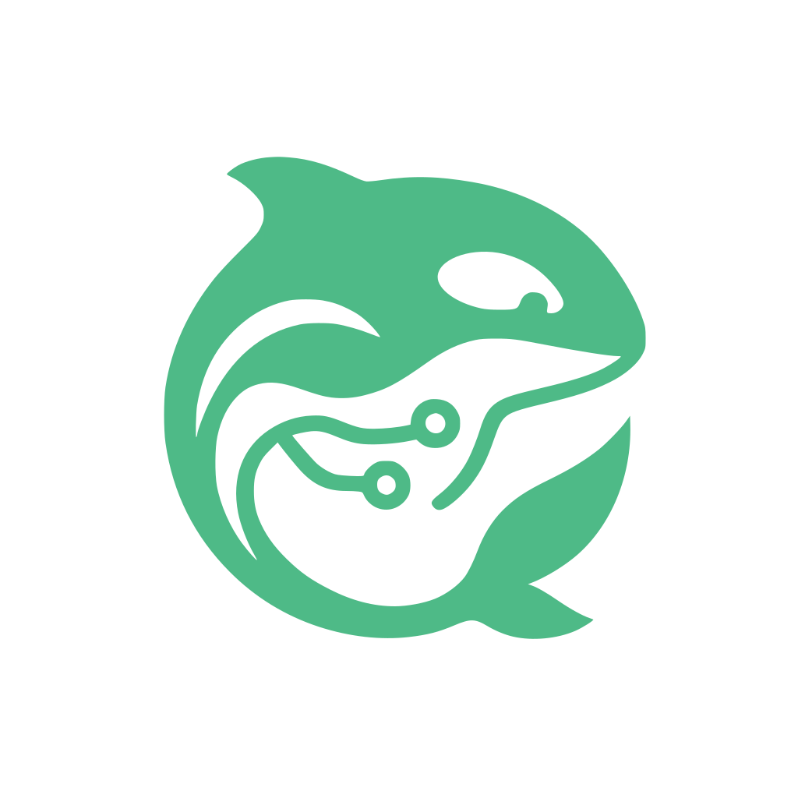

Skip to content

Keiko
Design System
Overview
Start here
Guidelines
Foundations
Icons · Lift
Components
Messages & Feedback
Editor Theme
Patterns
Motion
Accessibility
Content & Voice
Review
System Audit
Theme
Dark
Keiko · v0.3.0